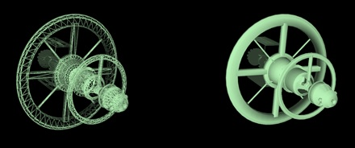
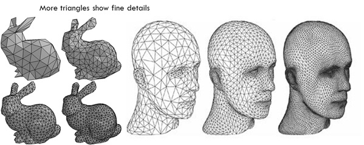
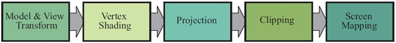

Introduction
What is Computer Graphics
About Computer Graphics
--Modeling: Mathematical specification of shape and appearance, such as a triangle mesh surface and reflection model.
--Rendering: Creation of shaded images from 3-D computer models.
--Animation: A technique to create the illusion of motion by time-sequencing rendered images.
Modeling


Rendering
Proper lighting and Texture provide our Mesh model a fine realistic outlook
Animation
Animating objects that appear in a three-dimensional space. They can be rotated and moved like real objects. 3D animation is at the heart of games and virtual reality, but it may also be used in presentation graphics to add flair to the visuals.
Related Fields
Related fields include the following.
| User Interaction: |
Interface between user input devices and an application program. |
| Virtual Reality: |
Attempt to immerse the user in a 3-D virtual world using stereo graphics, response to head motion, sound, haptics (force feedback), etc. |
| Visualization: |
Provide insight into data via visual display. |
| Image Processing: |
Manipulation of 2-D images. |
| 3-D Scanning: | Use of range-finding to create 3-D models. |
Applications
- Video games: simulations without the need for high accuracy.
- Movie special effects such as digital compositing (superimposed backgrounds with separately filmed foregrounds) or computer-generated foregrounds. The first full-length computer-generated film was Toy Story in 1994.
- CAD/CAM (Computer-aided Design/Manufacturing) mechanical parts and products are designed by a 3-D modeling package and produced by a computer controlled milling machine.
- Simulation
- Medical imaging creation of shaded images from scanned patient data
- Visualization
- Paint programs, Art
- Word processing and desktop publishing
- Business graphics: graphs and charts
- GUI's
Graphic Pipeline Overview
Application Stage
- The developer has full control over what happens in the application stage.
- A consequence of the software-based implementation of this stage is that it is not divided into substages.
- In order to increase performance, this stage is often executed in parallel on several processor cores.
Geometry Stage
The geometry stage is responsible for the majority of the per-polygon and per-vertex operations.

The geometry stage subdivided into a pipeline of functional stages.
Rasterizer Stage
The rasterizer stage subdivided into a pipeline of functional stages.
Triangle Setup
In this stage the differentials and other data for the triangle’s surface are computed. This data is used for scan conversion, as well as for interpolation of the various shading data produced by the geometry stage. This process is performed by fixed-operation hardware dedicated to this task.
Triangle Traversal
Here is where each pixel that has its center (or a sample) covered by the triangle is checked and a fragment generated for the part of the pixel thatoverlaps the triangle. Finding which samples or pixels are inside a triangle is often called triangle traversal or scan conversion. Each triangle fragment’s properties are generated using data interpolated among the three triangle vertices.
Pixel Shading
Any per-pixel shading computations are performed here, using the interpolated shading data as input. The pixel shading stage is executed by programmable GPU cores. A large variety of techniques can be employed here, one of the most important of which is texturing.
Merging
The information for each pixel is stored in the color buffer, which is a rectangular array of colors (a red, a green, and a blue component for each color). It is the responsibility of the merging stage to combine the fragment color produced by the shading stage with the color currently stored in the buffer.